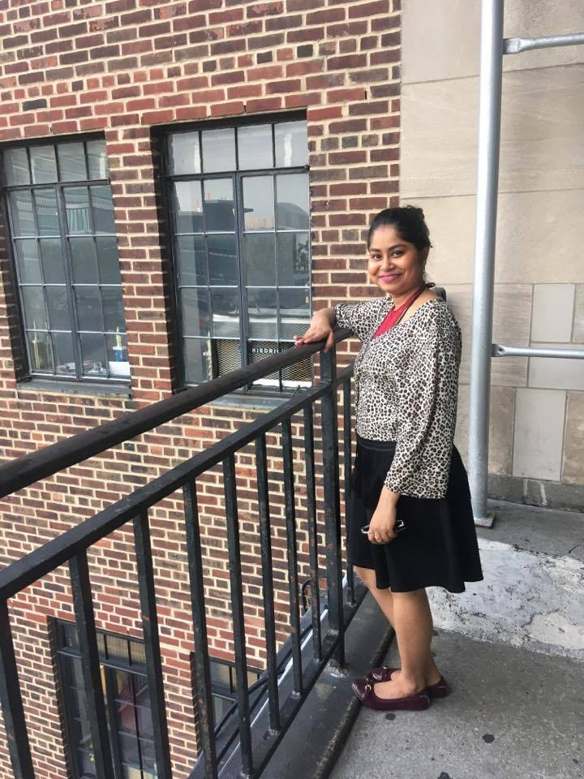

Computer Science Graduate Student
New York, United States
7162755897
Master's in Science Degree
Bachelor's Degree
Skills
Computer Science Skills
Python, Java, C ,C++
Operating Systems: Windows, Linux, Mac
Other Skills: MS Word, PowerPoint, Excel, Android Studio, Eclipse, IntelliJ, Matlab, Python IDLE, Atom
Languages
English
Hindi
Bengali
Executive Board Member- Webmaster-"Society of Hispanic Professionals"
Recipient of Student Leader Award, NYU
Active Member, School of Engineering, Agents of Change
Graduate Orientation Leader, Fall 2017, NYU
Dancer, KASH, KIIT University
Member, Rhythm of Nation, KIIT University
I am a creative thinker who enjoys learning, building and solving things.My journey into the world of computer science began with the first program I wrote which could function as a calculator. I was astonished to see how I could design my own ways to solve problems and validate my answers just by compiling the program. The first programming language I learnt was C. Since then, my interest for computer science kept flourishing and there was no stopping me. I started developing the logic to translate my thinking into code. I completed my Bachelors degree in Computer Science Engineering from Kalinga Institute of Industrial Technology, India and decided to pursue my interest of learning by enrolling for a Masters Degree program at NYU, Tandon School of Engineering.
I love exploring new places, clicking photographs and traveling. I am an trained classical Odissi Dancer and I have also learnt Karate. Dance gives me a platform to express my emotions it transports me into a different universe. I feel much closer to GOD and it directs my unbroken flow of thoughts into the direction of concentration. Karate on the other hand teaches me more disciple and gives the strength and stamina to stay fit.
My foundation as a computer science student helps me to critically examine problems and use my analytical skills to find solutions. I am currently working as an instructor for the K-12 STEM -Computer Science for Cyber Security program. I am responsible for designing a coherent and relevant curriculum that aligns teaching, learning and assessment approaches. I enjoy working with the young minds and together we worked on designing and solving programming challenges, and working on Website Development and Cybersecurity.
I have interests in the fields of Programming, Big Data Management, Computer Vision, Databases and would love to translate my learning into solving the challenges and building products to serve the people. I am always looking for an opportunity where I could utilize my leadership skills as well as my knowledge in technology to be a valuable asset for the company
Last but not the least I enjoy volunteering through “New York Cares” as it gives me an opportunity to give back to the society and makes me complete. I also enjoy blogging and sharing my thoughts on Quora and Mogul.